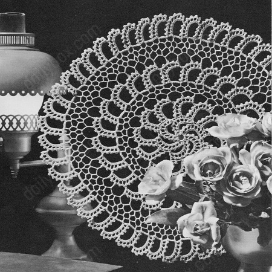

Crescent Curve Doily Pattern
The crochet Crescent Curve doily is a beautiful decorative item that is typically made using fine yarn and a crochet hook. It features a crescent-shaped design with intricate stitches and patterns.
MATERIALS:
J. & P. COATS "BIG BALL" BEST SIX CORD MERCERIZED CROCHET, Art. A.104, Size 20: 2 balls of No. 1 White, No. 61 Ecru or No. 42 Cream;
or
CLARK'S "BIG BALL" MERCERIZED CROCHET, Art. B.34, Size 20: 1 ball of No. 1 White, No. 61 Ecru or No. 42 Cream;
or
CLARK'S "BIG BALL" MERCERIZED CROCHET, Art. 8.345, Size 20: 1 ball of White or Ecru.
Milwards Steel Crochet Hook No. 9.
Doily measures 15 inches in diameter.
NOTE: Because of the nature of the design, this doily has a tendency to curl while being worked. Pressing after completion will flatten it.
CENTER MOTIF: Starting at center, ch 10. Join with sl st to form ring.
First Spoke: Ch 17.
1st Rnd: (right side): Sc in 2nd ch from hook and in next 15 ch, make 2 sc in ring. Ch 2, turn.
2nd Rnd: Skip next 3 sc, (dc in next sc, ch 2, skip next sc) 7 times; sl st in next sc. Ch 1, turn.
3rd Rnd: In each ch-2 sp of spoke make 2 sc, ch 3 for picot loop and 2 sc; make 2 sc in ring.
Second Spoke Ch 16, turn, skip last 3 picot loops made on last spoke, sl st in next picot loop. Ch 1, turn.
1st Rnd: Sc in each ch across, make 2 sc in ring. Ch 2, turn.
2nd and 3rd Rnds: Repeat 2nd and 3rd Rnds of last spoke. Repeat Second Spoke 3 times more.
Sixth Spoke: Work as for Second Spoke until the 2nd Rnd has been completed.
3rd Rnd: (In next ch-2 sp make 2 sc, ch 3 and 2 sc) 4 times; make 2 sc in next sp, ch 1, sl st in 17th ch of first spoke, ch 1, 2 sc in same sp as last 2 sc were made and complete the spoke as before. Join to first sc. Break off and fasten.
FIRST BAND OF SPOKES:
First Spoke: Attach thread to first picot loop made on any spoke, ch 17.
1st Rnd:: Sc in 2nd ch from hook and in next 15 ch, sl st in same picot loop where thread was attached, ch 2, sl st in next picot loop on Center Motif. Ch 2, turn.
2nd Rnd: Skip next sc, (dc in next sc, ch 2, skip next sc) 7 times; sl st in next sc. Ch 1, turn.
3rd Rnd: In each ch-2 sp of spoke make 2 sc, ch 3 and 2 sc, sl st in same picot loop where sl st was made at end of first Rnd, ch 2, sl st in next picot loop on Center Motif.
Second Spoke: Ch 16, turn, skip last 3 picot loops made on last spoke, sl st in next picot loop. Ch 1, turn.
1st Rnd:: Sc in next 16 ch, sl st in same picot loop where last sl st was made at end of 3rd Rnd on last spoke, ch 2, sl st in next picot loop on Center Motif. Ch 2, turn.
2nd and 3rd Rnds: Repeat 2nd and 3rd Rnds of First Spoke, then sl st in first 2 sc on next spoke of Center Motif, sl st in next picot loop.
Third Spoke: Ch 16, turn, skip last 3 picot loops made on last spoke, sl st in next picot loop. Ch 1, turn.
1st Rnd: Repeat first Rnd of Second Spoke.
2nd and 3rd Rnds: Repeat 2nd and 3rd Rnds of First Spoke. Repeat Second and Third Spokes alternately until 11 spokes have been completed.
Twelfth Spoke: Work as for Second Spoke until the 2nd Rnd has been completed.
3rd Rnd: (In next ch-2 sp make 2 sc, ch 3 and 2 sc) 4 times; make 2 sc in next sp, ch 1, sl st in 17th ch of First Spoke, ch 1, 2 sc in same place as last 2 sc were made and complete the Rnd as for 3rd Rnd of Second Spoke. Sl st in first 2 sc on next spoke of Center Motif, sl st in next picot loop. Break off and fasten.
Now work in rnds as follows:
1st Rnd: Attach thread to first picot loop on First Spoke, ch 12, skip next picot loop of same spoke, dc in next picot loop, (ch 9, dc in first picot loop on next spoke, ch 9, skip next picot loop, dc in next picot loop) 11 times; ch 6, dc in 3rd ch of ch-12.
2nd Rnd: Ch 8, * in next loop make (dc, ch 5) twice. Repeat from * around, ending with dc in loop formed at end of last rnd, ch 2 and join with dc in 3rd ch of ch-8 to form last sp.
3rd Rnd: Ch 8, * dc in next sp, ch 5. Repeat from * around. Join with sl st to 3rd ch of ch-8.
SECOND BAND OF SPOKES: Sc in next sp on last rnd.
First Spoke: Ch 17, turn.
1st Rnd: Sc in 2nd ch from hook and in each ch across, make 3 sc in same sp where first sc was made. Ch 2, turn.
2nd Rnd: Skip last 4 sc, (dc in next sc, ch 2, skip next sc) 7 times; sl st in last sc. Ch 1, turn.
3rd Rnd: In each ch-2 sp make 2 sc, ch 3 and 2 sc, sc in last sp used on last rnd, make 5 sc in next sp, sc in next dc, sc in next sp.
Second Spoke: Ch 16, turn, skip last 3 picot loops made on previous spoke, sl st in next picot loop. Ch 1, turn.
1st Rnd: Sc in each of the 16 ch, make 3 sc in last sp used on last rnd. Ch 2, turn.
2nd and 3rd Rnds: Repeat 2nd and 3rd Rnds of First Spoke. Repeat Second Spoke 21 times more.
Last Spoke: Work as for Second Spoke until 2nd Rnd has been completed.
3rd Rnd: (In next ch-2 sp make 2 sc, ch 3 and 2 sc) 4 times; make 2 sc in next sp, ch 1, sl st in 17th ch of First Spoke, ch 1, 2 sc in same place as last 2 sc were made and complete the Rnd as for 3rd Rnd of First Spoke, omitting last sc. Join to first sc.
Break off and fasten.
Now work in rnds as follows: 4th, 5th, and 6th rnds: Repeat 1st, 2nd and 3rd rnds, ending 3rd rnd with ch 2, dc in 3rd ch of ch-8.
7th Rnd: Repeat 3rd rnd.
THIRD BAND OF SPOKES:
Work as for Second Band of Spokes, making 48 spokes. Starch lightly and press.
HOME